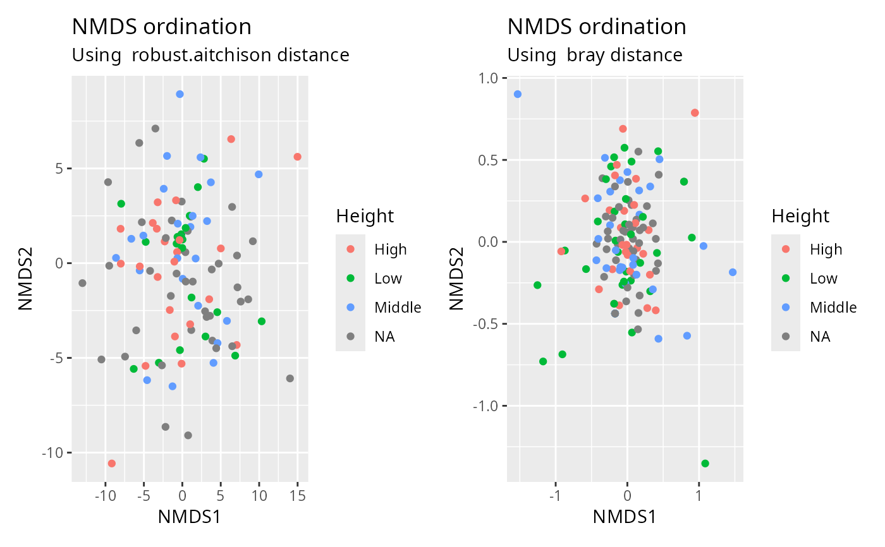

A wrapper of plot_ordination with vegan distance matrix
Source:R/plot_functions.R
plot_ordination_pq.RdA wrapper of plot_ordination with vegan distance matrix
Arguments
- physeq
(required) a
phyloseq-classobject obtained using thephyloseqpackage.- method
(string, default "robust.aitchison") The distance method to use from vegan::vegdist(). See ?vegan::vegdist for more details.
- ordination_method
(string, default "NMDS") The ordination method to use in phyloseq::ordinate(). See ?phyloseq::ordinate for more details.
- ...
Additional arguments passed on to phyloseq::plot_ordination()
Details
Basically a wrapper of phyloseq::plot_ordination() to use aitchison and
robust.aitchison distances from vegan package.
Examples
library(patchwork)
plot_ordination_pq(data_fungi_mini, method = "robust.aitchison", color = "Height") +
plot_ordination_pq(data_fungi_mini, method = "bray", color = "Height")
#> Run 0 stress 0.1133285
#> Run 1 stress 0.1810546
#> Run 2 stress 0.124062
#> Run 3 stress 0.197421
#> Run 4 stress 0.1846916
#> Run 5 stress 0.1436983
#> Run 6 stress 0.1467497
#> Run 7 stress 0.1342782
#> Run 8 stress 0.1292872
#> Run 9 stress 0.1379121
#> Run 10 stress 0.1724095
#> Run 11 stress 0.1834184
#> Run 12 stress 0.1815515
#> Run 13 stress 0.1937242
#> Run 14 stress 0.2003058
#> Run 15 stress 0.1779367
#> Run 16 stress 0.1691389
#> Run 17 stress 0.2030561
#> Run 18 stress 0.1506576
#> Run 19 stress 0.1557108
#> Run 20 stress 0.1798924
#> *** Best solution was not repeated -- monoMDS stopping criteria:
#> 14: stress ratio > sratmax
#> 6: scale factor of the gradient < sfgrmin
#> Warning: `aes_string()` was deprecated in ggplot2 3.0.0.
#> ℹ Please use tidy evaluation idioms with `aes()`.
#> ℹ See also `vignette("ggplot2-in-packages")` for more information.
#> ℹ The deprecated feature was likely used in the phyloseq package.
#> Please report the issue at <https://github.com/joey711/phyloseq/issues>.
#> Run 0 stress 0.2437839
#> Run 1 stress 0.2503454
#> Run 2 stress 0.2449217
#> Run 3 stress 0.2488405
#> Run 4 stress 0.2506359
#> Run 5 stress 0.2449691
#> Run 6 stress 0.2459483
#> Run 7 stress 0.2462621
#> Run 8 stress 0.2468937
#> Run 9 stress 0.2459695
#> Run 10 stress 0.2500868
#> Run 11 stress 0.2483659
#> Run 12 stress 0.2463637
#> Run 13 stress 0.244415
#> Run 14 stress 0.2485833
#> Run 15 stress 0.248111
#> Run 16 stress 0.2485444
#> Run 17 stress 0.2484063
#> Run 18 stress 0.2518243
#> Run 19 stress 0.2474289
#> Run 20 stress 0.2454506
#> *** Best solution was not repeated -- monoMDS stopping criteria:
#> 1: no. of iterations >= maxit
#> 19: stress ratio > sratmax
